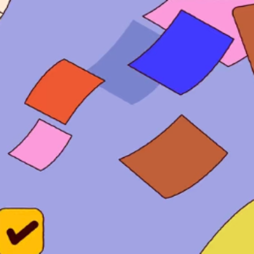

边栏随手记MacShelf
从屏幕边缘拉出来的访达侧栏An Edge-Docked Finder
贴在屏幕边缘的抽屉：拖进文件夹就能翻看，剪贴板自动收着，随手记一个快捷键唤出。A drawer docked to the screen edge — drop in folders to browse, clipboard kept for you, quick notes on one shortcut.
关于这个应用About
不用离开手头的事，也不用切到访达。从屏幕边缘一拉，文件夹、剪贴板和随手记都在同一个侧栏里：文件夹能直接翻看、搜索、收藏成常用目录，网格与列表两种看法随手切；剪贴板把复制过的图片、链接、文件按类型分开存着，翻回去就能重新复制；想到什么按 ⌃⌘N 记一笔，写完自动落盘。原生 SwiftUI 加 AppKit，菜单栏常驻，面板可固定也可随手收起。No need to leave what you're doing or switch to Finder. Pull the drawer from the screen edge and folders, clipboard history and quick notes all live in one sidebar: browse, search and pin folders as favourites, switching between grid and list at will; the clipboard keeps images, links and files sorted by type so you can copy them back later; hit ⌃⌘N to jot something down and it saves itself. Native SwiftUI plus AppKit, always in the menu bar, pinnable or dismissed on a whim.
主要功能Highlights
- 屏幕边缘抽屉，一拉即出Edge drawer, one pull away
- 文件夹网格 / 列表双视图与搜索Grid and list folder views with search
- 常用目录收藏，路径直达Pinned favourites and path jumping
- 剪贴板历史自动收集（图片 / 链接 / 文件）Clipboard history for images, links and files
- ⌃⌘N 全局随手记，自动保存Global ⌃⌘N quick note, autosaved
- 菜单栏常驻，面板可固定Menu bar resident, pinnable panel
这是给自己用的原生 macOS 工具：Swift Package 直接构建成 .app，没有上架，也没做公证与分发。想聊实现，欢迎来信。A native macOS tool built for my own desk: a Swift Package compiled straight into a .app, neither notarised nor distributed. Happy to talk about how it works — just write.